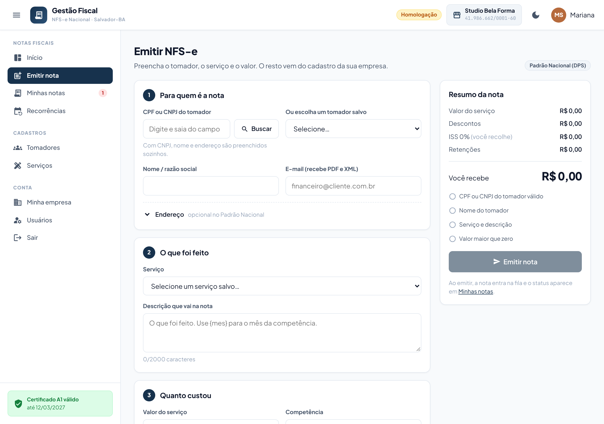
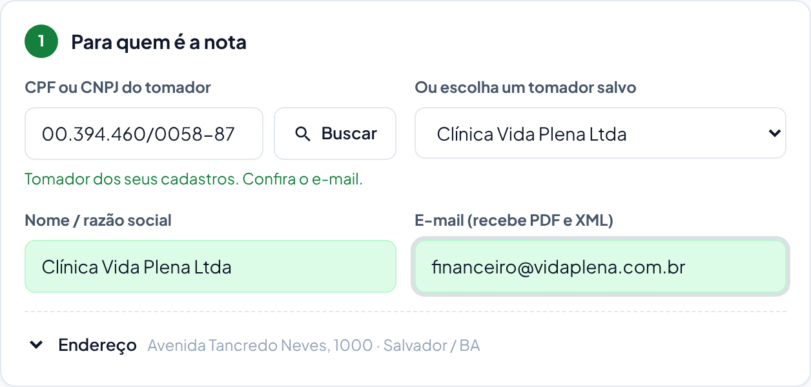
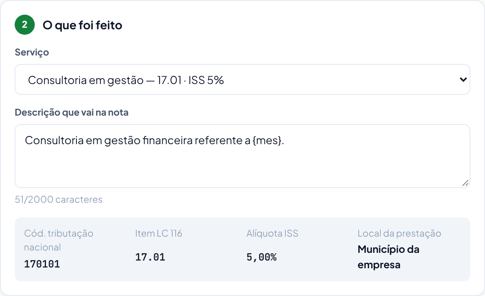
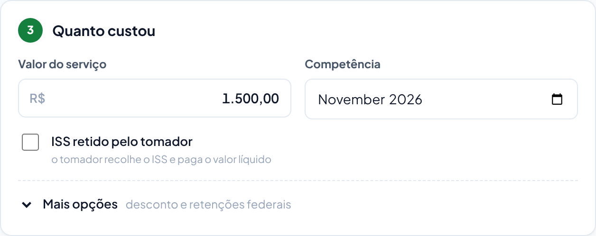
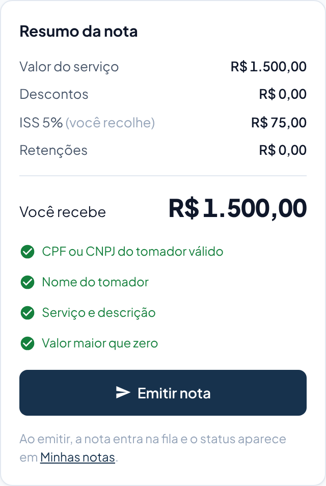
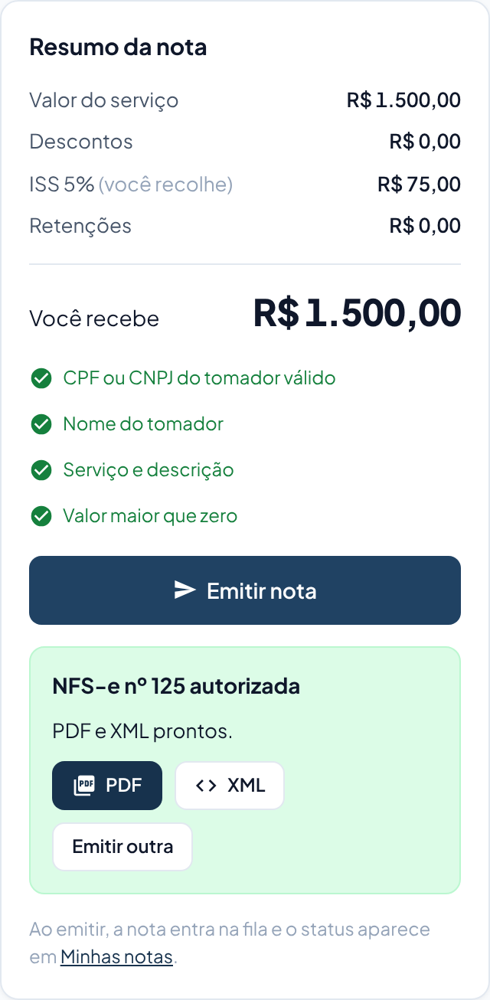
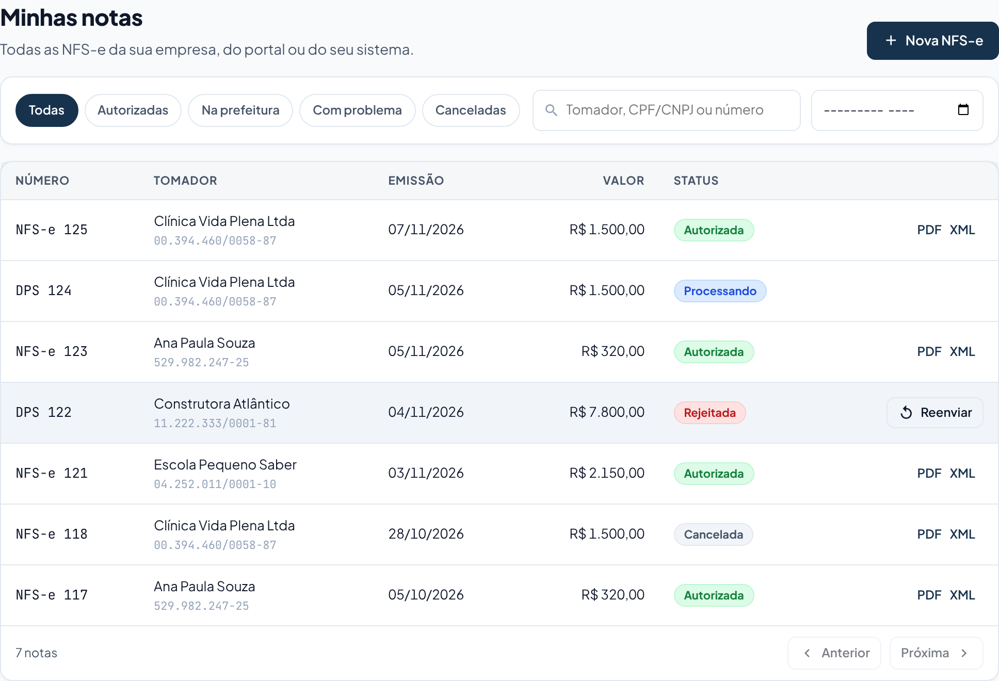

Emitir uma NFS-e
Em 3 blocos: para quem é a nota, o que foi feito e quanto custou. Leva cerca de 1 minuto.
checklist Antes de começar
- Tenha em mãos o CPF ou CNPJ de quem contratou o serviço (o tomador).
- Saiba o que foi feito e o valor.
- Veja no topo da tela se aparece Homologação. Nesse modo a nota é só de teste e não vale de verdade.
-
Abra a tela "Emitir nota"
No menu da esquerda, clique em Emitir nota. Também dá para usar o botão + Nova NFS-e da tela inicial.

À esquerda ficam os 3 blocos. À direita, o resumo mostra o que falta preencher. -
Bloco 1: para quem é a nota
Escolha um dos jeitos:
- Tomador que já recebeu nota antes: escolha o nome em Ou escolha um tomador salvo. Tudo se preenche sozinho.
- Tomador novo com CNPJ: digite o CNPJ e clique em Buscar. Nome e endereço vêm sozinhos.
- Tomador novo com CPF (pessoa física): digite o CPF e escreva o nome completo.
Se preencher o e-mail, o tomador recebe o PDF e o XML da nota. O endereço é opcional no Padrão Nacional.

Quando o bloco fica completo, o número dele fica verde. -
Bloco 2: o que foi feito
Em Serviço, escolha um serviço da lista. Os códigos fiscais e a alíquota do ISS aparecem logo abaixo, você não precisa digitar nada.
Confira o texto em Descrição que vai na nota e ajuste se quiser. Onde estiver escrito
{mes}, a nota mostra o mês da competência por extenso (ex.: novembro/2026).
O serviço não está na lista? Escolha + Outro serviço (digitar os códigos) e informe o código de tributação nacional e a alíquota. Não sabe os códigos? Eles estão em uma nota antiga da empresa ou com o seu contador. Deixe marcado Salvar este serviço para não digitar de novo.
-
Bloco 3: quanto custou
Digite o Valor do serviço. A Competência já vem com o mês atual; mude só se o serviço foi de outro mês.
Marque ISS retido pelo tomador somente se o seu cliente for pagar o ISS no seu lugar. Na dúvida, pergunte ao seu contador. Desconto e retenções federais ficam em Mais opções, e na maioria das notas não são usados.

-
Confira o resumo e clique em "Emitir nota"
O resumo à direita mostra o ISS e quanto você recebe. Quando os 4 itens ficarem verdes, o botão Emitir nota é liberado. Clique uma vez e aguarde.

-
Veja o resultado
Em poucos segundos aparece uma destas mensagens logo abaixo do botão:
- autorizada pronto! Baixe o PDF e o XML ali mesmo, ou clique em Emitir outra.
- enviada a prefeitura ainda está processando. Pode seguir trabalhando, o status atualiza sozinho.
- A prefeitura não autorizou leia o motivo, corrija o campo e clique em Emitir nota de novo. A mesma nota é reenviada, não duplica.

-
Acompanhe em "Minhas notas"
Toda nota emitida aparece em Minhas notas, com o status e os arquivos para baixar.

O que cada status quer dizer
| Status | O que significa | Precisa fazer algo? |
|---|---|---|
| Na fila | A nota foi recebida e vai ser enviada à prefeitura. | Não, só aguardar. |
| Processando | A prefeitura está analisando a nota. | Não, só aguardar. |
| Autorizada | A nota vale. PDF e XML disponíveis. | Não. |
| Rejeitada | A prefeitura recusou a nota e diz o motivo. | Sim: ver o motivo e corrigir (veja "Se der errado"). |
| Cancelada | A nota foi cancelada e não vale mais. | Não. |
Se der errado
| O que aconteceu | O que fazer |
|---|---|
| O botão Emitir nota está cinza e não clica. | Olhe a lista no resumo: o item sem o visto verde é o que falta preencher. |
| Aparece um aviso vermelho embaixo de um campo. | O aviso diz o que corrigir. Corrija e clique em Emitir nota de novo. |
| O CNPJ não preencheu o nome sozinho. | Confira os números do CNPJ. Se estiver certo, digite o nome manualmente. |
| A nota ficou muito tempo em Na fila ou Processando. | A prefeitura pode estar lenta. Espere alguns minutos. Se passar de 1 hora, fale com o suporte. |
| A prefeitura rejeitou a nota. | Leia o motivo em Minhas notas. Se o erro está nos dados da nota (CEP, CPF, valor...), emita de novo com o dado certo. Se o problema não era na nota (prefeitura fora do ar, cadastro da empresa já corrigido), clique em Reenviar, que manda a mesma nota outra vez. Não entendeu o motivo? Mande um print para o suporte. |
| Emiti a nota errada. | Ela pode ser cancelada em Minhas notas. Veja o artigo "Cancelar uma nota". |